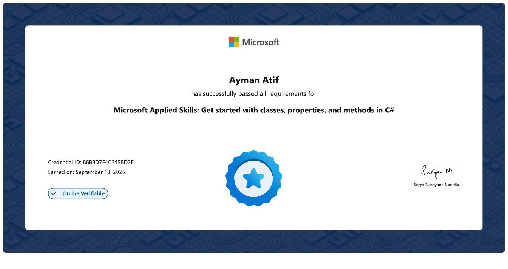

Microsoft
MICROSOFT APPLIED SKILLS
Get started with classes, properties, and methods in C#
A practical Microsoft credential covering core object-oriented C# skills: defining classes, working with properties, and using methods.
- Earned
- September 18, 2026
- Credential ID
- 88BBD7F4C24BBD2E
- Status
- Online verifiable